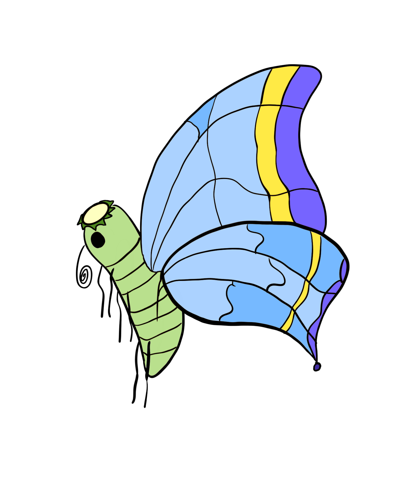
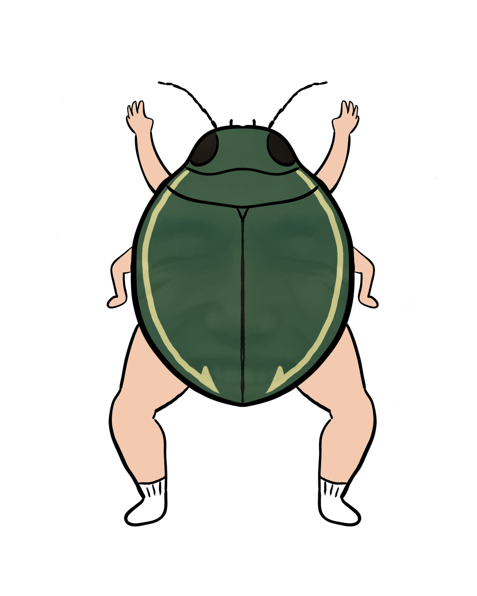
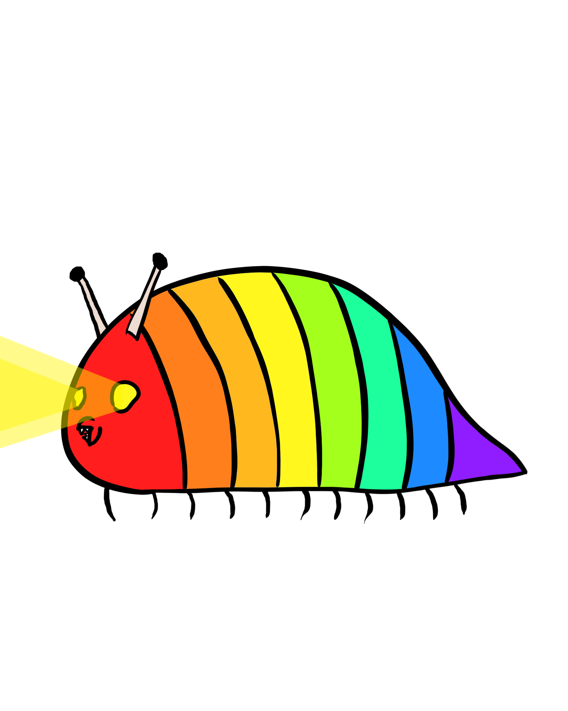

極秘研究資料
大学内で作り出されている昆虫のデータです。機密情報のため写真ではなくイメージ図となります。

アオハネサライモムシ
・サライモムシ科
概要
背中から青い液体を噴射しており、それがチョウの羽のように見えている。
頭には栄養や水を蓄えるための皿があり、干からびると死んでしまう。
ストレスにとても弱く、熱い視線を浴びると頭の皿があっという間に乾
いてしまう。
手足のように見えるのは敵を威嚇するための器官であり、敵が近づくと
ピロピロと揺らして威嚇をする。このイモムシが成虫になった姿は目撃
されていない。

ジンメンクロール
・ジンメンゲンゴロウ科
概要
クロールでしか泳げない珍しいゲンゴロウ。人間によってつくられた。
5秒ごとにクーラーの冷気を吸わないと死ぬ。生きるのに向いていない。
背面にはうっすらと人間の顔が浮かんでおり、目を閉じた表情の個体が
ほとんどだが、稀に目を開けた表情の個体がいるといわれている。その
個体の背面の顔と目が合うと、その人はジンメンクロールにされてしま
うといわれている。後ろ足に靴下のようなものがみられるのがオス。

ナナイロドゥルドゥル
・ナカミドゥルドゥル科
概要
ナメクジにはいくつかの科が分かれているが、それまでに発見されたどの科にも属さない。
特徴的なその色は外敵から身を守るためとされているが、あまりにも目立つため、主に大
型の鳥類に捕食されてしまう。また、夜行性なうえに、目から発光するため、他の夜行性
の小型動物にも発見され捕食される。しかし、捕食されると、体を丸め、表面積を小さく
してから、酸に耐性を持っている甲殻で、捕食者の胃液から身を守り、排泄されることで
逃れることができる。
移動は他のナメクジと同じで腹をくねらせることで前進するため、足のように見えるもの
は実は羽根である。飛ぶことはできない。
※この研究はフィクションです。昆虫も架空の存在です。